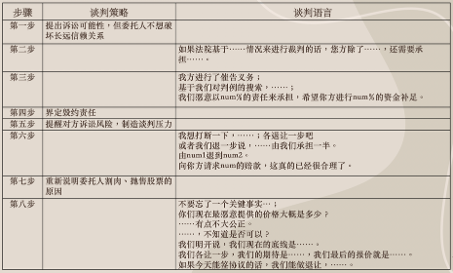
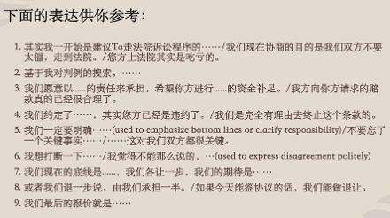

从真人秀到谈判桌：法律中文课的体演任务设计
From Reality TV to the Negotiating Table: Performance Tasks in Legal Chinese
本文内容曾在全美中文教师学会（CLTA）2025 年会（纽约）小组报告中分享，同组报告人为曾稚妮老师、郝荣荣老师；全文原载于“体演文化教学法”微信公众号（2025 年 8 月）。
这是一门两学分的法律方向专门领域中文课。教学对象是一名正在修读四年级中文课程的学生，口语水平已达到 ACTFL 高级低（Advanced Low）。她主修国际研究与中文，计划申请法学院。我们选取了真人秀《令人心动的 offer 2》中的一个“委托炒股纠纷案”，围绕它设计了两个课时的教学任务。
第一课时：掌握谈判语言与策略
导视问题。我们通过导视问题引导学生关注重点视频片段、提取关键信息，并直接落实到输出任务中。例如，学生需要在课上向老师口头复述案情，因此课前要反复观看“带教律师向实习生介绍案情”的片段，自学生词、理清逻辑。我们也提醒学生：光听懂还不够，能清楚完整地说出来才算掌握。
谈判策略填空表。针对“正式谈判”片段，我们设计了一份八个步骤的预习表格，老师预先填好一半，学生补全其余部分，并记录每个步骤对应的策略用语。这种“填空”形式既降低了任务压力，又提供了范例，帮助学生建立结构化语篇表达的意识。

文化对比任务。我们提出问题：在美国，委托朋友炒股合法吗？“保底条款”有效吗？类似情况发生在美国，谁的胜算更大？学生需要围绕关键词查找美国案例，主动比较中美法律处理方式的异同。由于已经掌握了中国案例的关键信息，学生查找资料时不是“盲查”，而是带着具体问题去找答案。
第二课时：体演与迁移
体演任务：为什么不演“正式谈判”？节目中有完整的谈判片段，但我们没有让学生直接表演正式谈判，而是把情境设定为正式谈判前的“内部预演”：学生扮演实习生，老师扮演带教律师，由“带教律师”提出问题和反驳，帮助学生提前练习应对。
这样设计有两点考虑。第一是专业能力的限制：师生都没有接受过系统的法律训练，直接表演谈判很容易变成机械模仿视频台词，不利于语言内化。第二是真实性的考量：真人秀的情境更多服务于镜头，未必符合律所真实的工作流程；而在律所实习中，请同事或资深律师帮忙做一轮“预演”，恰恰是学生将来真可能遇到的情境。这样一来，学生不必照搬台词，只要表达能体现相应的策略即可，表达空间也更大。体演文化教学法强调，课堂情境应当指向学习者将来在目标文化中可能扮演的角色（Walker & Noda, 2000）——情境不必拘泥于节目原貌，而应贴近学生理想的未来职业身份。
为了支持体演，我们还整理了一份句型表，大多来自上一课的预习表格。句型本身不复杂，却恰好满足模拟谈判场景的语言需求，让学生在演练中把注意力更多放在策略的运用上。

案例迁移。我们请学生自己找一个中国或美国的“委托炒股纠纷案”，在课上讲清案情、分析争议点、概括法院判决，并使用课上学过的专业表达。令我印象深刻的是，学生自己在江苏法院网上找到了一个类似案例，来源正规、内容完整。她不仅清楚地讲出了案情，还能与视频中的案例进行对比，并在准备过程中自学了不少法律术语。这次任务让学生意识到：自己有能力在课外找到优质的中文资源，并把课堂所学投入实践。
专门领域中文课的几点思考
结合这门课的实践，我们在密大中文领航项目的专门领域教学中总结了几个方向：突破课本的束缚，甄选优质的第一手文本；提供精心设计的文本和视频辅助材料，引导学生成为自主学习者；设计体演任务，让学生在目标文化中身体力行地展现专业能力，实现未来“职场自我”的记忆构建；以及，教师自己也要保持好奇心，不断学习，成为具备超强自学能力的“全科型”教师。
参考文献
- Walker, G. (2000). Performed culture: Learning to participate in another culture. In R. D. Lambert & E. Shohamy (Eds.), Language policy and pedagogy: Essays in honor of A. Ronald Walton. John Benjamins.
- Walker, G., & Noda, M. (2000). Remembering the future: Compiling knowledge of another culture. In D. W. Birckbichler & R. M. Terry (Eds.), Reflecting on the past to shape the future. National Textbook Company.